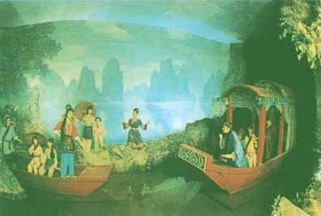

山歌精彩歌词赏析
（注：从姐妹在茶林采茶）
众姐妹： 三月鹧鸪满山游，四月江水到处流，
采茶姑娘茶山走，茶歌飞上白云头。
草中野兔窜过坡，树头画眉离了窝，
江心鲤鱼跳出水，要听姐妹采茶歌。
采茶姐妹上茶山，一层白云一层天，
满山茶树亲手种，辛苦换得茶满园。
春天采茶抽茶芽，快趁时光掐细茶。
风吹茶树香千里，盖过园中茉莉花，
采茶姑娘时时忙，早起采茶晚插秧，
早起采茶顶露水，晚插秧苗伴月亮。
刘三姐： 采茶采到茶花开，漫山接岭一片白，
蜜蜂忘记回窠去，神仙听歌下凡来。
众男声： 好歌才， 只有三姐唱得来，
心想与姐唱几句，不知金口开不开。
刘三姐： 心想唱歌就唱歌，心想打鱼就下河，
你拿竹篙我拿网，随你撑到哪条河。
众男声： 什么水面打跟斗，什么水面起高楼，
什么水面撑阳伞，什么水面共白头。
刘三姐： 鸭子水面打跟斗，大船水面起高楼，
荷叶水面撑阳伞，鸳鸯水面共白头。
众男声： 什么结果抱娘颈，什么结果一条心，
什么结果抱梳子，什么结果披鱼鳞。
刘三姐： 木瓜结果抱娘颈，香蕉结果一条心，
柚子结果抱梳子，菠萝结果披鱼鳞。
众男声： 什么有咀不讲话，什么无嘴闹喳喳，
什么有脚不走路，什么无脚走千家。
刘三姐： 菩萨有咀不讲话，铜锣无嘴闹喳喳，
财主有脚不走路，铜钱无脚走千家。
壮族民歌与歌仙刘三姐
壮族是一个歌的民族，它有着深厚的民歌传统。“只要留得嘴巴在，不死还要唱山歇。”可见山歌已成为壮族人民生活的一部分，是壮族人民不可缺少的精神食粮。
壮族人人会唱歌，是因为有刘三姐这位歌仙。人说：三姐骑鱼上青天，留下山歌万万千；如今广西成歌海，都是三姐亲口传。
自唐代以来，刘三姐的故事就已经在广西各族人民中间流传开来，她不仅被壮族人民称为自己民族的歌仙，还被广西其它少数民族称为歌仙，她是一个聪明、美丽、勤劳、勇敢的壮族姑娘，能歌善唱，常以山歌赞美大自然，歌颂劳动，揭露封建地主阶级对劳动人民的剥削和压迫，表达劳动人民的意志和愿望，所以她赢得了广大壮族劳动人民的爱戴。但她的反抗精神和智慧，却触怒了封建统治阶级，他们百般迫害，使她不得不四处漂泊。
山峰婉蜒重叠，江流曲曲弯弯，一片红色的朝霞，映现在山峦的隐处，顺着水流飘来了刘三姐的歌声：
唱山歌。
这边唱来那边和，
山歌好比春江水。
不怕滩险弯又多……
刘三姐与“三月三”
刘三姐是壮族民间传说人物。其传说最早见于南宋王象之《舆地纪胜》卷九十八《三妹山》。明清以来，有关她的传说与歌谣文献记载很多。壮族民间口耳相传的故事与歌谣更为丰富。
据传刘三姐为唐代壮族农家女，年幼聪颖过人，被视为“神女”。十二岁能通经传，指物索歌，开口立就。自编自唱，歌如泉涌，优美动人，不失音律，故有“歌仙”之誉。十五岁时聘于林氏，唐开元十年（722年），为抗拒林氏逼婚，与情人张伟望出奔，不知所终。民间多以为双双成仙而去。广西宜山壮族传说，刘三姐生于唐中宗神龙元年（703年），从小聪慧过人，能歌善唱。12岁即出口成章，妙语连珠，以歌代言，名扬壮乡。后曾到附近各地传歌。慕名前来与她对歌的人络绎不绝，但短则一日，长则三五天，个个罄腹结舌，无歌相对，无言以答，羞赧而退。然而她的才华却遭到流氓恶霸的嫉恨，后被害死于柳州。传说她死后骑鲤鱼上天成了仙。也有的说她在贵县的西山与白鹤少年对歌七日化而为石。还有的说财主莫怀仁欲娶她为妾，三姐坚决反抗，莫买通官府迫害三姐，三姐乘船飘然而去，等等。
虽然传说不一，但千百年来壮族人民对她的尊崇与热爱之情却是一致的。现在，广西很多地区都立有刘三姐的塑像或刘三姐庙。每当有新的壮歌集问世，必先捧一本供在她的像前。有些地方的歌圩，第一项议程是抬着她的像游行。壮族人民尊她为“歌仙”，至今还有“如今广西歌成海，都是三姐亲口传”的传颂。
“三月三”，是壮族地区最大的歌圩日，又称“歌仙节”，相传是为纪念刘三姐而形成的民间纪念性节日。1984 年，广西壮族自治区人民政府正式将这一天定为壮族的全民性节日──“三月三”歌节。每年的这一天，自治区首府南宁市及其他各地都要举行盛大的歌节。歌节期间，除传统的歌圩活动外，还要举办抢花炮、抛绣球、碰彩蛋及演壮戏、舞彩龙、擂台赛诗、放映电影、表演武术和杂技等丰富多彩的文体娱乐活动。另外，各种商业贸易、投资洽谈等活动亦逐渐增加，形成“文化搭台，经济唱戏”的新风尚。届时，岭南壮乡四海宾朋云集，歌如海，人如潮。那不绝于耳的嘹亮歌声，寄托着人们对歌仙刘三姐的思念和对丰收、对爱情、对幸福美好生活的憧憬和向往。
南宁国际民歌艺术节的由来
壮乡素有 “歌海”之称，“歌王”、“歌匠”、“歌手”到处都有，“歌仙”刘三姐便是其中的典型。壮族人民历来都有唱山歌的习惯，每逢节日及重大节庆活动都以唱山歌的方式互相交流，传情达意。农历的三月三是壮族传统的歌圩，在这一天许多壮家姑娘、小伙，甚至是上年纪的老人都会在田间山坡上相互对唱山歌，以歌定情，以歌会友。
从1993年起广西以壮族歌节为基础，在每年的农历三月三举办广西国际民歌节。1999年，广西决定将广西国际民歌节更名为南宁国际民歌艺术节，主办单位由自治区人民政府改为南宁市人民政府，时间由每年的农历三月三改为每年阳历11月份。南宁国际民歌艺术节成为集文化、经贸、旅游为一体的大型节庆活动，成为广西各族人民共同的文化节日。